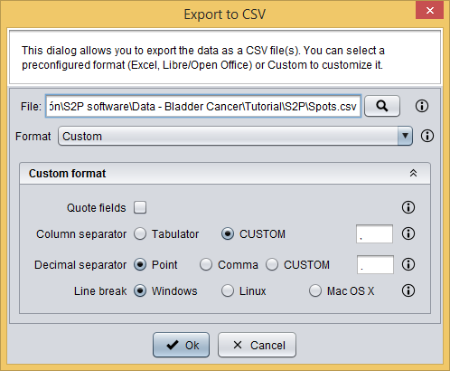

SameSpots analysis can be edited using the SameSpots analysis editor.
SameSpots analysis editor
The SameSpots analysis editor allows you to:
First, you have to define the experiment conditions by clicking the button, which will show you the following dialog where you must add the experiment conditions.
SameSpots analysis editor: adding conditions
Secondly, you have to assign each sample to one condition and edit samples' names by clicking the button, which will show you the following dialog where you can do this.
SameSpots analysis editor: editing samples
Finally, you have to export the prepared spots data into a CSV file by clicking the button, which will show you the following dialog. This dialog allows you to select a file to save your data as well as to define the CSV format./

SameSpots analysis editor: exporting spots data to CSV
After clicking the Ok button, spots are exported into a CSV file and this spots data is automatically loaded by S2P, which adds it as a Spots data datatype to the clipboard and automatically opens it in the Integrated analysis view. The CSV can also can be loaded in S2P later using the Load spots operation.